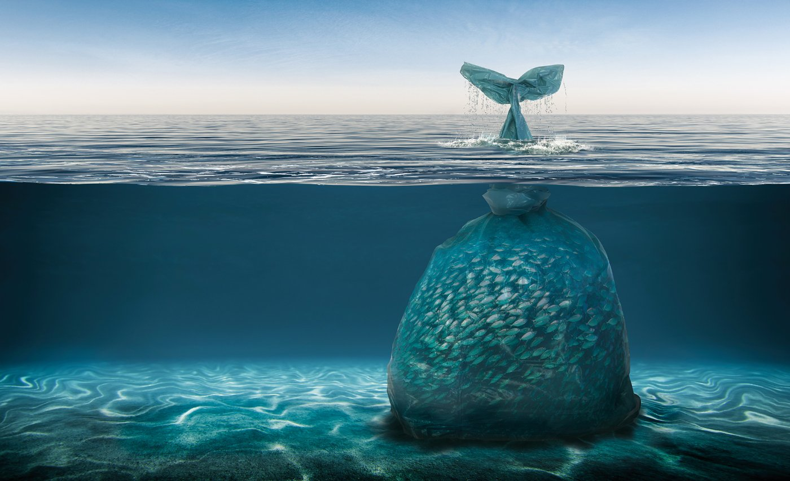

What is plastic pollution?

Plastic pollution is the result of plastic waste accumulating and adversely affecting the environment and ecosystems around it. The world’s oceans are being hit the worst by this problem.
The Problem Of Plastics
In 1907 the invention of Bakelite began a revolution in materials by introducing truly synthetic plastic resins into world commerce. Plastic is a polymeric material—that is, a material whose molecules are very large, often resembling long chains made up of a seemingly endless series of interconnected links. It is versatile, lightweight, flexible, moisture resistant, strong, and relatively inexpensive.
Plastics don't react with materials like alcohol, gasoline, or acid, and thus they are great for storing stuff. Unfortunately, that also means that they don't decay. It instead divides down into smaller and smaller pieces called micro-plastics. These pieces can stick around for centuries and can be deadly to sea life if ingested. Everything from seabirds to whales can be seriously hurt or killed by this plastic. Millions of animals have already been killed as a result of plastic pollution, including many endangered species. By the end of the 20th century, however, plastics were found to be persistent polluters of several environmental niches, from Mount Everest to the bottom of the sea.

The Urgency of the Global Plastic Problem
Study authors Roland Geyer, Jenna R. Jambeck, and Kara Lavender Law estimated that 8,300 million metric tons of plastics have been produced to date and the vast majority has ended up in our environment. Since its invention, Worldwide reliance on the disposable plastic packaging is overwhelming our planet.

While some items, like newspapers, may only take a few weeks to decompose, trash we throw away on a regular basis specially those containing plastic can take an entire lifetime, as well as the lifetime of our children, grandchildren, and great-grandchildren to decompose.
The graph below compares the material decomposition rates for commonly discarded items.

Which countries contribute most to plastic pollution?
Roughly 8 million tons of plastic is dumped into the world's oceans every year and the majority of this waste comes from just five countries: China, Indonesia, the Philippines, Thailand and Vietnam (Jambeck et al, 2015).
One might think that because United States produce so much plastic waste that we would be one of the main perpetrators, but in fact, the U.S. ranks 20th in the world for ocean pollution when it comes to plastic. The graph below shows the top 20 countries in the world with highest mismanaged waste.

If you live hundreds of miles away from the coast, it probably never occurs to you that the plastic bag or the straw fragments that you toss into the sewer might make its way into the Atlantic or the Pacific. But somewhere between 40,000 and 110,000 metric tons of plastic waste generated by Americans end up in the ocean (Jambeck et al. 2015). This is the equivalent of throwing between 60 and 160 full-sized cars worth of weight in plastic into the ocean every day.

What is mismanaged waste?
Mismanaged waste is waste that is not properly disposed of i.e., there isn’t a formally managed waste management system. Highly populated China tops the rank of countries whose mismanaged plastic waste goes into the Oceans, but the US also featured in the top 20 and contributed a higher rate of waste per person (Jambeck et al, 2015). Most of the littered plastic waste worldwide ultimately ends up at sea. Swirled by currents, plastic litter accumulates over time at the center of major ocean vortices forming “garbage patches”, i.e. larges masses of ever-accumulating floating debris fields across the seas. Plastic waste accumulates in areas of the ocean where winds create swirling circular currents, known as gyres, which suck in any floating debris. All five gyres have higher concentrations of plastic rubbish than other parts of the oceans.

Where does all this plastic end up?
More than three-quarters of the plastic waste ends up in landfills where it may take up to 500 years to decompose, and potentially leak pollutants into the soil and water(Geyer et al. 2017). It’s estimated that there are already 165 million tons of plastic debris floating around in the oceans threatening the health and safety of marine life. At an average of 8.8 million metric tons enter the oceans each year, including microplastics, tiny particles less than five millimeters long from cosmetics, fabrics or the breakdown of larger plastic pieces, which may be ingested by marine wildlife.
Since the ocean is downstream from nearly every terrestrial location, it is the receiving body for much of the plastic waste generated on land. The plastic that finds its way into the ocean is mostly mismanaged and consists of small particles hidden just below the surface of the water that circulates and concentrates in the ocean gyres, large circular systems of ocean currents
Source: http://www.green-alliance.org.uk/
What is Ingestion? :The process of taking a substance into the body by swallowing or absorbing it.
What is Entanglement? : The action or fact of entangling or being entangled.